マイクラドロケイドロ
CPU警察の監視をかいくぐり、脱獄を目指せ！
多彩な職業とミッション、仲間との協力？をして大脱獄！
ゲーム基本ルール & システム
ゲームの進行やステータスの仕様について
⏱️ 時間とミッション
- ・時間10分経過後に脱出口が出現！以降、1分ごとに警察が増加していきます。
- ・ミッション：10分間に約5回発生。失敗すると警察が増えるなどのペナルティが発生します。
🚪 脱出口の仕組み
- ・1階（個人脱出口）：マップの中心に出現。シフト長押しで自分だけが脱獄可能。
- ・2階（共通脱出口）：牢屋の対角線上。「人数×12.5秒」のシフト長押しで開放。一度開けば誰でも右クリックで脱獄可能！
📊 ステータスの詳細
- ・脱出時間：個人の脱獄地点で脱獄成功するまでに必要な時間。
- ・回復時間：シフトを押し続けてHPを回復できるまでの時間（自動回復なし）。
- ・救出時間：牢屋の前でシフトを押して仲間を救出するまでの時間。
⚔️ 攻撃力と防御力の計算仕様
- ・攻撃力：そのままの数値が警察へのダメージになり、HPが0になると警察はしばらくその場で気絶して起き上がります。
- ・防御力：警察の攻撃力（基本15）から防御力を引いた数分ダメージを受けます。防御力の方が高くなった場合は1ダメージになります。
職業・役職図鑑
カードをクリックすると、詳細な数値やスキル効果を確認できます！
No.001
無職
戦闘: C
逃走: C
支援: D
詳細 >
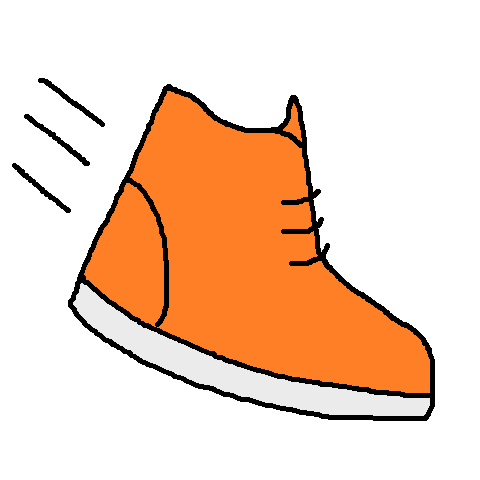
No.002
スポーツ選手
戦闘: B
逃走: A
支援: D
詳細 >
No.003
医者
戦闘: D
逃走: B
支援: S
詳細 >
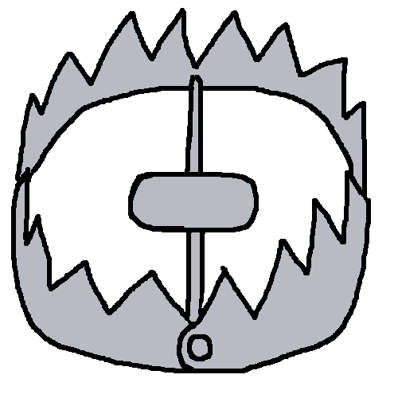
No.004
トラッパー
戦闘: C
逃走: B
支援: B
詳細 >
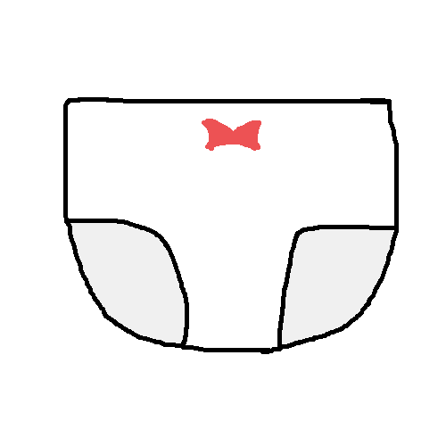
No.005
下着ドロボー
戦闘: B
逃走: B
支援: A
詳細 >
No.006
元ヤン
戦闘: S
逃走: B
支援: B
詳細 >
No.007
探偵
戦闘: D
逃走: C
支援: S
詳細 >
No.008
魔法使い
戦闘: A
逃走: B
支援: C
詳細 >
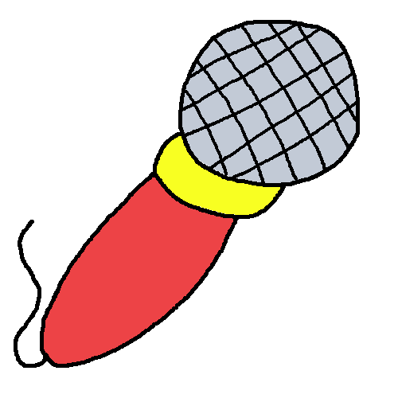
No.009
アイドル
戦闘: B
逃走: C
支援: A
詳細 >
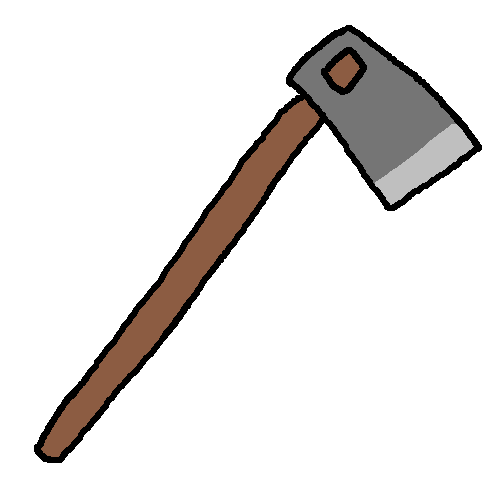
No.010
農家
戦闘: B
逃走: B
支援: A
詳細 >
No.011
空間術師
戦闘: D
逃走: B
支援: A
詳細 >
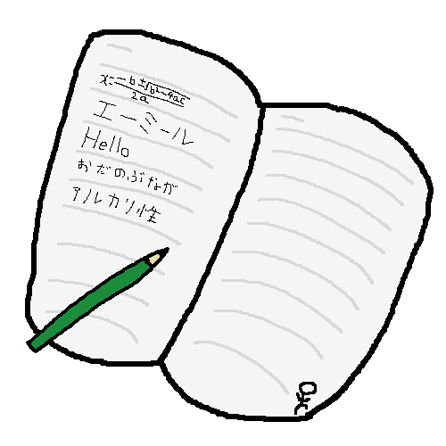
No.012
教師
戦闘: B
逃走: C
支援: S
詳細 >
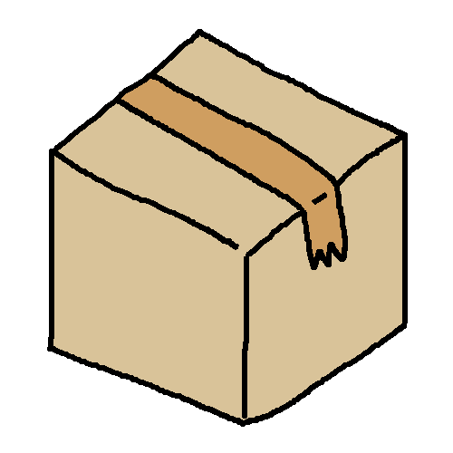
No.013
配達員
戦闘: C
逃走: C
支援: A
詳細 >
No.014
料理人
戦闘: B
逃走: A
支援: A
詳細 >
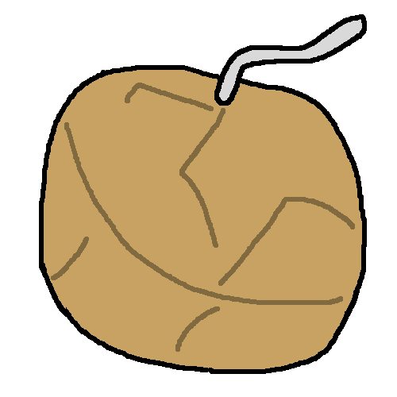
No.015
花火師
戦闘: A
逃走: B
支援: D
詳細 >
No.016
音楽家
戦闘: C
逃走: B
支援: B
詳細 >
No.017
車掌
戦闘: A
逃走: A
支援: C
詳細 >
No.018
ナイト
戦闘: C
逃走: A
支援: A
詳細 >
No.019
海賊
戦闘: A
逃走: A
支援: B
詳細 >
No.020
忍者
戦闘: B
逃走: A
支援: D
詳細 >
No.021
カメラマン
戦闘: B
逃走: B
支援: A
詳細 >
No.022
ラバー
戦闘: ?
逃走: ?
支援: ?
詳細 >
No.023
株主優待者
戦闘: D
逃走: B
支援: A
詳細 >
No.024
ボディビルダー
戦闘: S
逃走: A
支援: D
詳細 >
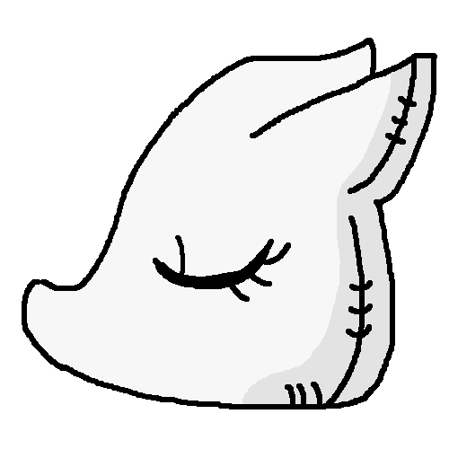
No.025
ものまね士
戦闘: C
逃走: A
支援: A
詳細 >
アイテムショップ図鑑
ゲーム内で購入・使用できる強力なアイテム一覧
Shop Item
5G
オレンジアップル
【消費アイテム】
体力を10回復する
Shop Item
10G
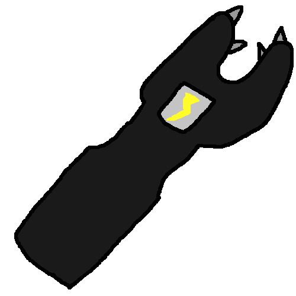
スタンガン
【消費アイテム】
左クリックで殴った相手をスタンさせる
Shop Item
15G
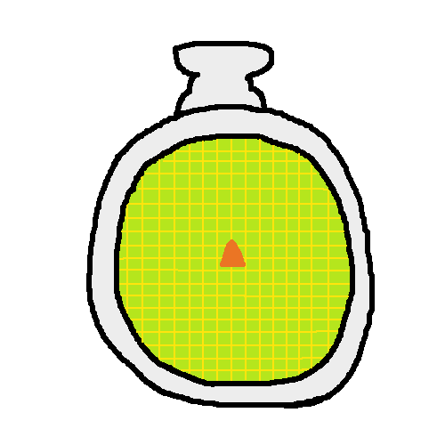
ポリスレーダー
【回数制限アイテム】
1番近くにいる警察の位置が10秒間わかる（5回使うと壊れる）
Shop Item
20G
透明マント
【消費アイテム】
5秒間透明になる
Shop Item
30G
絆創膏
【装備アイテム】
インベントリにあるだけで回復時間が少し早くなる
Shop Item
40G
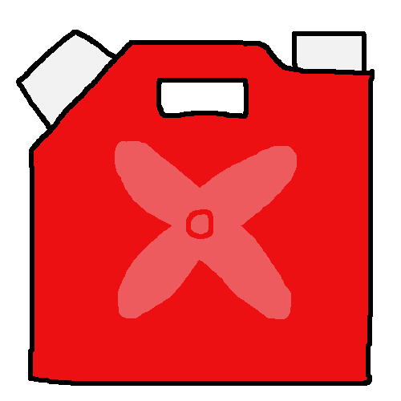
ロケットの燃料
【消費アイテム】
使用すると共通脱出時間を5秒縮める
Shop Item
50G
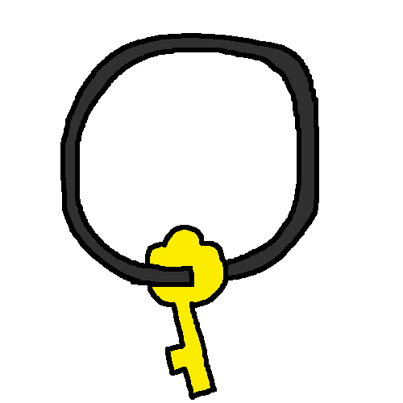
犬から盗った鍵
【装備アイテム】
インベントリにあるだけで救出時間が早くなる
Shop Item
80G
抜け道スプーン
【消費アイテム】
使用すると牢屋からランダムな場所に脱出する
Shop Item
250G
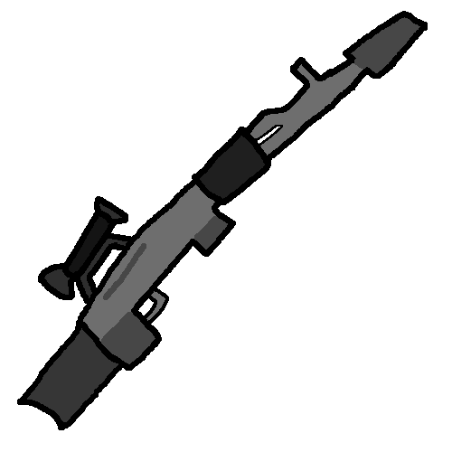
スナイパーライフル
【消費アイテム / 持ち帰れない】
当てた相手を倒す
Shop Item
25G
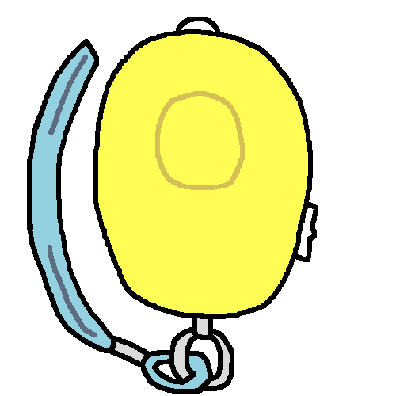
防犯ブザー
【消費アイテム】
近くの警察を呼ぶ
パッチノート（更新履歴）
ゲームのアップデート履歴や変更点
β 1.2.0 - お金の概念を追加
2026.10- スコアがお金になってそれで職業やアイテムを購入できるようになった。
- ミッションをそれなりに追加しました。
- マップの種類が少し増えました